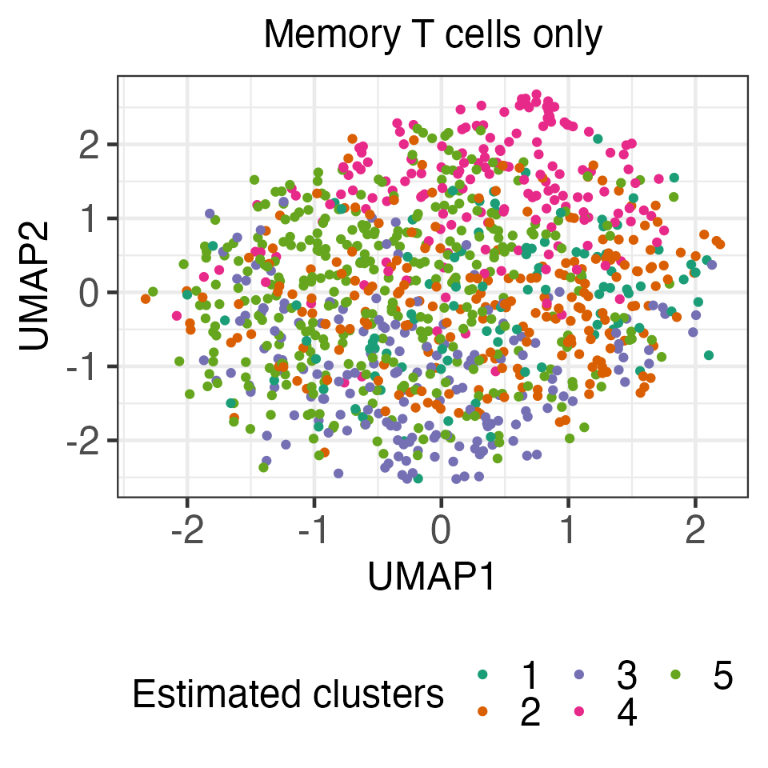
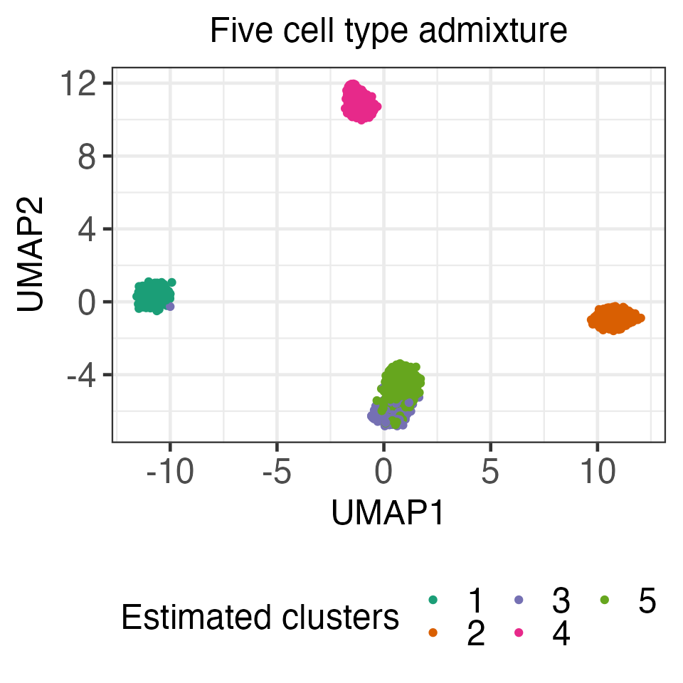

real_data_example.RmdIn this tutorial, we illustrate how to apply the functions in the KmeansInference package to a single-cell RNA-seq dataset originally collected by Zheng et al. (2017), available here Single-cell RNA-seq quantifies gene expression abundance at the resolution of single cells, thereby revealing cell-to-cell heterogeneity in transcription and allowing for the identification of cell types and marker genes. In practice, biologists often cluster the cells to identify putative cell types, and then perform a differential expression analysis, i.e., they test for a difference in gene expression between two clusters (Grün et al., 2015, Lähnemann et al., 2020, Stuart et al., 2019). Because this approach ignores the fact that the clusters were estimated from the same data used for testing, it does not control the selective Type I error.
In this tutorial, we will make use of the data of the following five cell types: monocytes, memory T cells, naive T cells, B cells, and natural killer cells.
After downloading the data, you will need to need to rename the five downloaded folders as filtered_matrices_mex_mono, filtered_matrices_mex_memory, filtered_matrices_mex_naive_cytotoxic,filtered_matrices_mex_bcell, and filtered_matrices_mex_nk. The following analysis also assumes that all five folders are listed under the directory raw.
First we load the package and read in relevant data.
library(fastcluster)
library(DropletUtils)
library(scater)
library(ggfortify)
library(patchwork)
library(KmeansInference)
library(umap)
consistent_color <- scales::hue_pal()(8)
# preprocessing function: credits to Lucy L. Gao at https://github.com/lucylgao/clusterpval-experiments/blob/master/real-data-code/util.R
process_data <- function(sce) {
# Define mitochondrial, ribosomal protein genes
rowData(sce)$Mito <- grepl("^MT", rowData(sce)$Symbol)
rowData(sce)$ProteinRibo <- grepl("^RP", rowData(sce)$Symbol)
# Calculate quality statistics
sce <- addPerCellQC(sce, subsets=list(mt=rowData(sce)$Mito, rbp=rowData(sce)$ProteinRibo))
sce <- addPerFeatureQC(sce)
# Delete bad cells (low library size, low gene count, high mitochondrial read proportion)
libsize.drop <- isOutlier(sce$sum, nmads = 3, type = "lower", log = TRUE)
feature.drop <- isOutlier(sce$detected, nmads = 3, type = "both", log = TRUE)
mito.drop <- isOutlier(sce$subsets_mt_percent, nmads = 3, type = "higher", log = TRUE)
sce <- sce[,!(libsize.drop | feature.drop |mito.drop)]
# Normalize library sizes, then log2 transformation with pseudo-count of 1
sce <- logNormCounts(sce)
# Subset to top 500 average count genes
X <- t(logcounts(sce))
X <- as.matrix(X)
X <- X[, order(rowData(sce)$mean, decreasing=T)[1:500]]
return(list(data=X, labels=colData(sce)$CellType))
}
# estimator for sigma
estimate_MED <- function(X){
for (j in c(1:ncol(X))){
X[,j] <- X[,j]-median(X[,j])}
sigma_hat <- sqrt(median(X^2)/qchisq(1/2,df=1))
return(sigma_hat)
}
##### Pre-processing and splitting data ####
cd4.t <- read10xCounts(paste0(input_dir,"./raw/filtered_matrices_mex_memory/hg19"))
cd19.b <- read10xCounts(paste0(input_dir, "./raw/filtered_matrices_mex_bcell/hg19"))
mono <- read10xCounts(paste0(input_dir, "./raw/filtered_matrices_mex_mono/hg19"))
nk <- read10xCounts(paste0(input_dir, "./raw/filtered_matrices_mex_nk/hg19/"))
naive.cytotoxic <- read10xCounts(paste0(input_dir,"./raw/filtered_matrices_mex_naive_cytotoxic/hg19/"))
pure.t <- cd4.t
colData(pure.t)$CellType <- c(rep("Memory T cell", ncol(cd4.t)))
mix5 <- cbind(cd4.t, cd19.b, mono, nk, naive.cytotoxic)
colData(mix5)$CellType <- c(rep("Memory T cell", ncol(cd4.t)),
rep("B cell", ncol(cd19.b)),
rep("Monocyte", ncol(mono)),
rep("Nature Killer", ncol(nk)),
rep("Naive Cytotoxic", ncol(naive.cytotoxic)) )As in prior work (Gao et al. 2020, Duo et al. 2018), we first excluded cells with low numbers of expressed genes or total counts, as well as cells in which a large percentage of the expressed genes are mitochondrial. We then divide the counts for each cell by the total sum of counts in that cell. Finally, we applied a \(\log_2\) transformation with a pseudo-count of 1 to the expression data, and considered only the subset of 1,000 genes with the largest average expression levels pre-normalization.
We applied this pre-processing pipeline separately to memory T cells (\(N=10,224\)) and a mixture of five types of cells (memory T cells, B cells, naive cytotoxic T cells, natural killer cells, and monocytes; \(N=43,259\)).
set.seed(1)
processed.t <- process_data(pure.t)
processed.mix5 <- process_data(mix5)To investigate the selective Type I error in the absence of “true clusters”, we first constructed a “no cluster” dataset by randomly sampling 1,000 out of 10,224 memory T cells after pre-processing. Since the gene expression levels are highly correlated, we first whitened the data, i.e., we consider performing clustering and inference on \(\hat{\Sigma}^{-1/2}x_i\) (as opposed to \(x_i\)), where \(\hat{\mathbf{\Sigma}}^{-\frac{1}{2}} = \mathbf{U}(\mathbf{\Lambda}+0.01 \mathbf{I}_n)^{-\frac{1}{2}}\mathbf{U}^\top\) and \(\mathbf{U}\mathbf{\Lambda}\mathbf{U}^\top\) is the eigenvalue decomposition of the sample covariance matrix of \(x_1,\ldots, x_{1,000}\).
ss.id.null <- sample(1:nrow(processed.t$data), 1000)
X1 <- processed.t$data[ss.id.null, ]
X1.ss <- processed.t$data[setdiff(1:nrow(processed.t$data), ss.id.null), ]
eigen_cov_X <- eigen(coop::covar(X1))
U <- eigen_cov_X$vectors
D <- diag(sqrt(1/(eigen_cov_X$values+0.01)))
X1_iso <- X1%*%t(U)%*%D%*%(U)We applied k-means clustering to the transformed data with \(K=5\) (with 30 random initializations), and obtained five clusters consisting of 97, 223, 172, 165, and 343 cells, respectively. The resulting clusters are visualized using UMAP.
set.seed(1234)
seed_list <- sample(2021,size=30,replace = FALSE)
k_means_list <- lapply(seed_list, function(x)kmeans_estimation(X1_iso,
k=5,iter.max = 30,seed = x))
within_ss_list <- lapply(k_means_list, function(x)x$objective[[x$iter]])
best_seed <- seed_list[which.min(unlist(within_ss_list))]
current_kmeans_neg <- k_means_list[[which.min(unlist(within_ss_list))]]
final_cluster_neg <- current_kmeans_neg$cluster[[current_kmeans_neg$iter]]
table(final_cluster_neg)
#> final_cluster_neg
#> 1 2 3 4 5
#> 97 223 172 165 343
set.seed(2021)
X1_umap = umap(X1_iso)
umap_data_x1 <- X1_umap$layout
colnames(umap_data_x1) <- c("UMAP1","UMAP2")
ggplot(umap_data_x1, aes(x=UMAP1, y=UMAP2,
colour=as.factor(final_cluster_neg))) +
geom_point() +
ggtitle("Memory T cells only") +
ylab("UMAP2") +
xlab("UMAP1") +
scale_colour_brewer(palette="Dark2", name="Estimated clusters",
guide=guide_legend(nrow=2)) +
theme_bw(base_size=18) +
theme(plot.title = element_text(hjust = 0.5,size=18),
legend.position="bottom",
#legend.title = element_text(size=18),
axis.text = element_text(size=18),
legend.text = element_text(size=18,hjust = 0),
axis.title=element_text(size=18))
In the code below, for demonstration purposes, we computed the p-values \(p_{\text{Naive}}\) (which does not account for the fact that cluster memberships are estimated on the same data used for testing) and \(p_{\text{selective}}\) (with estimated \(\hat\sigma\); see details in Section 4 of our paper). We see that the naive p-values are extremely small, while our proposed p-values are quite large. The complete results for all ten pairs of estimated cluster pairs, which can be found in Section 6 of our paper, yield the same trend. Because this dataset consists only of memory T cells, we believe that conclusion based on \(p_{\text{selective}}\) aligns better with the underlying biology.
sig_hat_neg <- estimate_MED(X1_iso)
neg_pval_1_2 <- kmeans_inference(X=X1_iso, k=5,
cluster_1=1,
cluster_2=2,
sig = sig_hat_neg,
iter.max = 30,
seed = best_seed)
summary(neg_pval_1_2)
#> cluster_1 cluster_2 test_stat p_selective p_naive
#> 1 1 2 8.83438 0.3024664 0
neg_pval_1_4 <- kmeans_inference(X=X1_iso, k=5,
cluster_1=1,
cluster_2=4,
sig = sig_hat_neg,
iter.max = 30,
seed = best_seed)
summary(neg_pval_1_4)
#> cluster_1 cluster_2 test_stat p_selective p_naive
#> 1 1 4 12.36426 0.4320175 0In what follows, we consider a “cluster” dataset by randomly sampling 400 each of memory T cells, B cells, naive T cells, natural killer cells, and monocytes from the 43,259 cell mixture. After whitening the data (using the aforementioned transformation), we applied k-means clustering to obtain five clusters.
tcell.id <- which(processed.mix5$labels == "Memory T cell")
bcell.id <- which(processed.mix5$labels == "B cell")
mono.id <- which(processed.mix5$labels == "Monocyte")
nk.id <- which(processed.mix5$labels == "Nature Killer")
naive.id <- which(processed.mix5$labels == "Naive Cytotoxic")
ss.id <- c(sample(tcell.id, 400), sample(bcell.id, 400),
sample(mono.id, 400),
sample(nk.id, 400), sample(naive.id, 400))
X2 <- processed.mix5$data[ss.id, ]
X2.ss <- processed.mix5$data[setdiff(1:nrow(processed.mix5$data), ss.id), ]
# eigen-decomp -- whitening
eigen_cov_X <- eigen(coop::covar(X2))
U <- eigen_cov_X$vectors
D <- diag(sqrt(1/(eigen_cov_X$values+0.01)))
X2_iso <- X2%*%t(U)%*%D%*%(U)
set.seed(2021)
X2_umap = umap(X2_iso)
umap_data_x2 <- data.frame(X2_umap$layout)
colnames(umap_data_x2) <- c("UMAP1","UMAP2")
umap_data_x2$CellType <- colData(mix5)$CellType[ss.id]
seed_list <- sample(2021,size=30,replace = FALSE)
k_means_list <- lapply(seed_list, function(x)
kmeans_estimation(X2_iso,k=5,iter.max = 20,seed = x))
within_ss_list <- lapply(k_means_list, function(x)x$objective[[x$iter]])
best_seed_pos <- seed_list[which.min(unlist(within_ss_list))]
current_kmeans_pos <- k_means_list[[which.min(unlist(within_ss_list))]]
final_cluster_pos <- current_kmeans_pos$cluster[[current_kmeans_pos$iter]]
ggplot(umap_data_x2, aes(x=UMAP1, y=UMAP2, colour=as.factor(final_cluster_pos))) +
geom_point() +
ggtitle("Mixture of five cell types") +
xlab("UMAP1") +
ylab("UMAP2") +
scale_colour_brewer(palette="Dark2", name="Estimated clusters",
guide=guide_legend(nrow=2)) +
theme_bw(base_size=18) +
theme(plot.title = element_text(hjust = 0.5,size=18),
legend.position="bottom",
axis.text = element_text(size=18),
legend.text = element_text(size=18,hjust = 0),
axis.title=element_text(size=18))
Comparing the estimated cluster membership with the “ground truth” cell types, we see that these clusters approximately correspond to the five different cell types (Cluster 1: 82.5% naive cytotoxic T cells; Cluster 2: 95.3% memory T cells; Cluster 3: 99.2% B cells; Cluster 4: 91.5% nature killer cells; Cluster 5: 83.3% monocytes).
adj_RI <- mclust::adjustedRandIndex(final_cluster_pos, umap_data_x2$CellType)
cat("Adjusted Rand Index between the estimated clusters and the cell types is ", adj_RI, "\n")
#> Adjusted Rand Index between the estimated clusters and the cell types is 0.7763105
result_tab <- table(final_cluster_pos, umap_data_x2$CellType)
result_tab/rowSums(result_tab)
#>
#> final_cluster_pos B cell Memory T cell Monocyte Naive Cytotoxic
#> 1 0.987562189 0.007462687 0.000000000 0.002487562
#> 2 0.000000000 0.000000000 0.070707071 0.000000000
#> 3 0.000000000 0.979885057 0.008620690 0.008620690
#> 4 0.183879093 0.000000000 0.816120907 0.000000000
#> 5 0.000000000 0.129102845 0.000000000 0.814004376
#>
#> final_cluster_pos Nature Killer
#> 1 0.002487562
#> 2 0.929292929
#> 3 0.002873563
#> 4 0.000000000
#> 5 0.056892779In the code below, we computed the p-values \(p_{\text{Naive}}\) and \(p_{\text{selective}}\) for two estimated pairs of clusters (full results can be found in Section 6 of our paper). Both sets of \(p\)-values are extremely small on this dataset, which suggests that our \(p\)-value has substantial power to reject the null hypothesis when it does not hold.
sig_hat_pos <- estimate_MED(X2_iso)
pos_pval_1_2 <- kmeans_inference(X=X2_iso, k=5,
cluster_1=1,
cluster_2=2,
sig = sig_hat_pos,
iter.max = 20,
seed = best_seed_pos)
summary(pos_pval_1_2)
#> cluster_1 cluster_2 test_stat p_selective p_naive
#> 1 1 2 26.43431 9.547757e-155 0
pos_pval_1_3 <- kmeans_inference(X=X2_iso, k=5,
cluster_1=1,
cluster_2=3,
sig = sig_hat_pos,
iter.max = 20,
seed = best_seed_pos)
summary(pos_pval_1_3)
#> cluster_1 cluster_2 test_stat p_selective p_naive
#> 1 1 3 19.09216 2.039673e-15 0Chen YT and Witten DM. (2022+) Selective inference for \(k\)-means clustering. arXiv preprint. https://arxiv.org/abs/2203.15267.
Duò, A., Robinson, M. D., and Soneson, C. (2018). A systematic performance evaluation of clustering methods for single-cell RNA-seq data. F1000Research, 7:1141.
Gao, L. L., Bien, J., and Witten, D. (2020). Selective inference for hierarchical clustering. arXiv preprint. arXiv:2012.02936.
Lähnemann, D., Köster, J., Szczurek, E., et al. (2020). Eleven grand challenges in single-cell data science. Genome Biology, 21(1):31.
Stuart, T., Butler, A., Hoffman, P., et al. (2019). Comprehensive integration of Single-Cell data. Cell, 177(7):1888–1902.e21.
Zheng, G. X. Y., Terry, J. M., Belgrader, P., Ryvkin, P., Bent, Z. W., Wilson, R., Ziraldo, S. B., Wheeler, T. D., McDermott, G. P., Zhu, J., Gregory, M. T., Shuga, J., Montesclaros, L., Underwood, J. G., Masquelier, D. A., Nishimura, S. Y., Schnall-Levin, M., Wyatt, P. W., Hindson, C. M., Bharadwaj, R., Wong, A., Ness, K. D., Beppu, L. W., Deeg, H. J., McFarland, C., Loeb, K. R., Valente, W. J., Ericson, N. G., Stevens, E. A., Radich, J. P., Mikkelsen, T. S., Hindson, B. J., and Bielas, J. H. (2017), “Massively parallel digital transcriptional profiling of single cells,” Nature Communications, 8, 14049. https://doi.org/10.1038/ncomms14049.